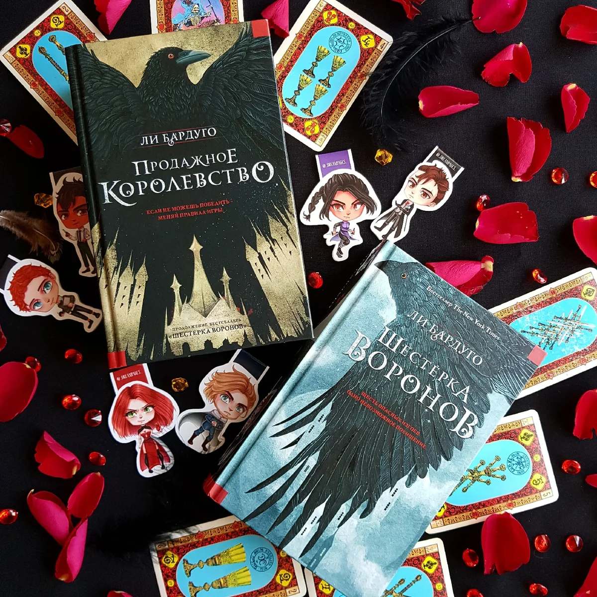

Перевод «Six of crows» и «Crooked Kingdom»
Первая часть была выпущена в России издательством АСТ в 2018 году.
Переводчик: Анастасия Харченко
Оформление: Екатерина Климова
Издательство: АСТ
Год издания: 2018
Страниц: 576
Она очень понравилась российским читателям, приобрела большой успех не менее, чем другие книги мира «Гришаверс». Вторая часть также была переведена в 2018 году.
Переводчик: Анастасия Харченко
Оформление: Екатерина Климова
Издательство: АСТ
Год издания: 2018
Страниц: 672
Книги настолько полюбились читателям, что они надеятся на третью часть!
<<Вернуться на главную>>